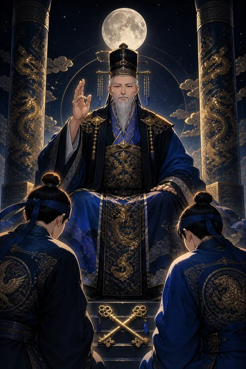

이 게시물은 쿠팡 파트너스 활동의 일환으로, 이에 따른 일정액의 수수료를 제공받습니다.


V 교황 카드 — 전통의 가르침과 믿음직한 조언
교황 카드 한눈에 보기
교황 카드 상징 읽기

동네보살의 카드 그림은 전통 라이더–웨이트 덱의 뜻을 새 그림으로 옮긴 것입니다. 아래 상징 설명은 전통 덱의 그림을 기준으로 합니다.
교황은 두 기둥 사이 높은 자리에 앉아 오른손을 들어 축복을 내립니다. 두 손가락을 세우고 두 손가락을 접은 손짓은 보이는 세계와 보이지 않는 세계를 잇는 가르침을 뜻합니다.
머리에 쓴 삼중관과 왼손의 삼중 십자 지팡이는 마음과 몸과 정신, 세 영역에 걸친 권위를 상징합니다. 오랜 세월 이어져 온 체계와 질서의 무게이기도 합니다.
발치에 놓인 엇갈린 두 열쇠는 지식의 문을 여는 수단으로, 스승을 통해 비밀이 전해진다는 의미입니다. 그 앞에 고개를 숙인 두 제자는 혼자 깨닫기보다 공동체 안에서 배우고 따르는 길을 보여 줍니다.
교황이 입은 붉은 겉옷과 흰 속옷, 푸른 안감은 열정과 순수함과 지혜가 겹겹이 쌓인 가르침을 상징합니다. 제자들의 옷에 수놓인 장미와 백합은 각기 다른 기질을 지닌 사람들이 같은 가르침 아래 모였다는 뜻입니다. 대칭을 이룬 그림 구도는 흔들림 없는 질서와 전해 내려오는 형식을 보여 줍니다.
교황 카드 정방향 뜻
정방향 교황은 이미 검증된 길 위에 답이 있다는 카드입니다. 처음부터 혼자 새 방법을 만들기보다 먼저 걸어간 사람의 경험과 오래 다듬어진 절차를 따르는 편이 시간과 에너지를 아껴 줍니다.
믿을 만한 선배나 스승, 전문가의 조언이 큰 도움이 되는 시기이니 모르는 부분은 솔직히 묻고 배우세요. 자격증 공부, 정식 교육 과정, 공동체 활동처럼 체계 안에서 성장하는 일과도 잘 맞습니다.
가치관과 신념을 다시 돌아보게 하는 의미도 있습니다. 내가 무엇을 옳다고 믿는지, 어떤 전통을 이어 가고 싶은지 정리해 두면 선택의 순간에 흔들리지 않습니다. 반대로 누군가에게 조언을 건네는 역할이 주어질 수도 있습니다. 결혼식, 입학, 입사처럼 공동체가 인정하는 의식을 치르는 일과도 인연이 깊은 카드입니다. 소속감 속에서 얻는 안정이 새로운 도전을 받쳐 주는 발판이 됩니다.
교황 카드 역방향 뜻
역방향 교황은 규칙과 관습이 본래의 뜻을 잃고 형식만 남은 상태를 보여 줍니다. 원래 그렇게 해 왔다는 이유만으로 맞지 않는 방식을 붙들고 있다면 그것이 발목을 잡을 수 있습니다.
다른 사람의 말이나 집단의 기대를 무조건 따르느라 자기 생각을 잃어버린 모습일 수도 있고, 반대로 모든 권위에 반발하다 필요한 조언까지 놓치는 모습일 수도 있습니다.
이 카드는 전통을 버리라는 뜻이 아니라 스스로 판단할 때가 되었다는 신호입니다. 배운 것 가운데 지금의 나에게 맞는 것은 남기고 맞지 않는 것은 정중히 내려놓아도 괜찮습니다. 남이 정한 정답보다 자신이 납득한 길이 오래갑니다. 한편 믿었던 조언자나 단체에 실망하는 일로 나타나기도 합니다. 그 경험은 아프지만, 권위에 기대지 않고 스스로 기준을 세우는 계기가 될 수 있습니다.
연애에서 교황 카드
솔로라면 지인의 소개나 소속된 모임을 통해 인연이 이어질 가능성이 높습니다. 가치관과 생활 방식이 비슷한 사람에게 편안함을 느끼며, 가벼운 만남보다 진지한 관계를 바라는 마음이 커지는 시기입니다.
연애 중이라면 관계를 공식적인 모습으로 다지고 싶은 흐름이 생깁니다. 가족에게 인사드리기, 결혼 준비처럼 정해진 절차가 오히려 둘 사이를 든든하게 만들어 줍니다. 한편 부모님이나 주변 사람들의 의견이 관계에 크게 끼어들 수도 있습니다. 조언은 귀 기울여 듣되, 최종 결정은 두 사람이 함께 내린다는 원칙을 지키면 흔들리지 않습니다. 솔로인 경우 종교 모임, 동호회, 학교처럼 오래 이어져 온 공동체에서 성실한 사람을 만날 수 있으니 그런 자리에 꾸준히 얼굴을 비춰 보세요. 연애 중인 커플이라면 서로의 집안 문화와 생활 습관을 존중하는 대화가 오래가는 관계의 토대가 됩니다.
재회·속마음 질문에서 교황 카드
재회 질문에 교황이 나오면 상대는 주변의 시선이나 가족, 친구의 의견을 많이 의식하고 있을 가능성이 있습니다. 마음이 남아 있어도 다시 만나는 것이 옳은지 스스로의 원칙과 저울질하는 중입니다. 믿을 만한 공통 지인을 통해 자연스럽게 소식을 잇거나, 예의를 갖춘 방식으로 정중하게 다가가는 편이 좋은 인상을 남깁니다. 연락을 한다면 충동적인 새벽 메시지보다 격식을 갖춘 차분한 안부가 훨씬 진지하게 받아들여집니다. 이전 관계에서 서로 지키지 못한 약속이 있었다면 그것을 먼저 인정하는 태도가 신뢰를 되살립니다. 믿을 만한 사람에게 상황을 털어놓고 객관적인 조언을 들어 보는 것도 도움이 됩니다.
일·금전에서 교황 카드
일에서는 멘토나 선배, 이미 잘 돌아가는 시스템의 도움을 받는 것이 유리합니다. 새로운 방식을 고집하기보다 회사의 규정과 업계의 표준을 익히면 실수가 줄고 신뢰가 쌓입니다. 교육, 상담, 공공 기관, 오래된 조직처럼 전통과 체계를 중시하는 환경과도 잘 어울립니다.
금전 면에서는 검증되지 않은 방법보다 오래 쓰여 온 안정적인 방식이 마음을 편하게 합니다. 큰돈이 오가는 결정이라면 혼자 판단하지 말고 경험 많은 사람의 이야기를 들어 보세요. 유행처럼 번지는 소문에 휩쓸리지 않는 태도가 도움이 됩니다. 새로운 분야를 배워야 한다면 독학보다 체계적인 강의나 선배의 지도를 받는 편이 빠르게 자리를 잡는 길입니다. 조직 안에서 인정받는 절차를 성실히 따르면 평판이 차근차근 올라갑니다.
교황 카드는 예일까 아니오일까
검증된 절차와 조언을 따를 때 일이 풀린다는 카드라서, 정해진 길을 밟는다면 긍정으로 봅니다. 역방향이면 기존 방식이 오히려 발목을 잡는다는 뜻이라, 틀을 바꿀 용기가 있을 때 답이 열립니다.
자주 묻는 질문
교황 카드 역방향은 나쁜 뜻인가요?
역방향 교황은 규칙과 관습이 본래의 뜻을 잃고 형식만 남은 상태를 보여 줍니다. 원래 그렇게 해 왔다는 이유만으로 맞지 않는 방식을 붙들고 있다면 그것이 발목을 잡을 수 있습니다.
교황 카드가 연애 질문에 나오면요?
솔로라면 지인의 소개나 소속된 모임을 통해 인연이 이어질 가능성이 높습니다. 가치관과 생활 방식이 비슷한 사람에게 편안함을 느끼며, 가벼운 만남보다 진지한 관계를 바라는 마음이 커지는 시기입니다.
타로 카드는 어떻게 뽑나요?
타로 카드 페이지에서 78장을 섞으면 그중 22장이 펼쳐집니다. 마음이 가는 세 장을 고르면 과거·현재·미래 자리에 놓이고, 한 장씩 뒤집어 자리와 방향에 맞는 풀이를 읽습니다. 정방향과 역방향은 섞는 순간 정해집니다.